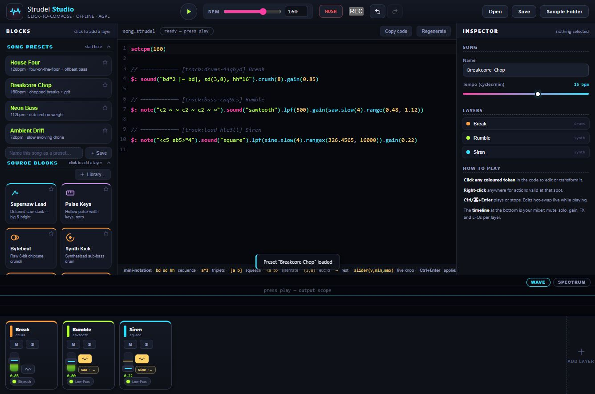
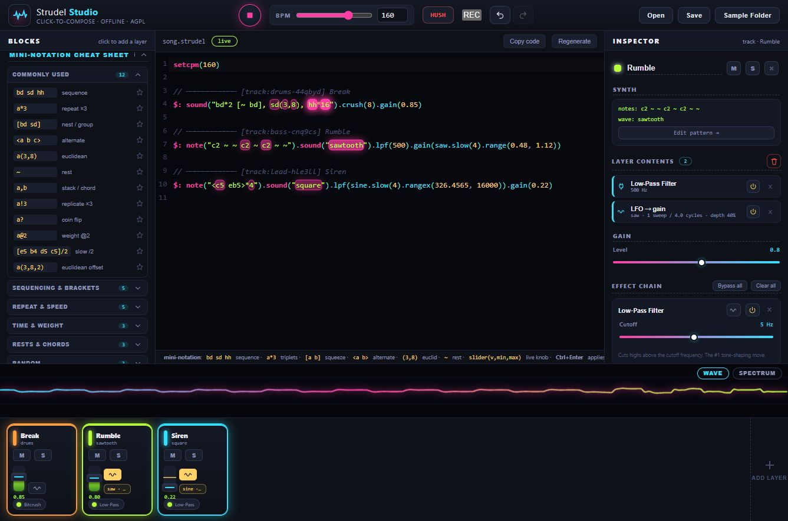
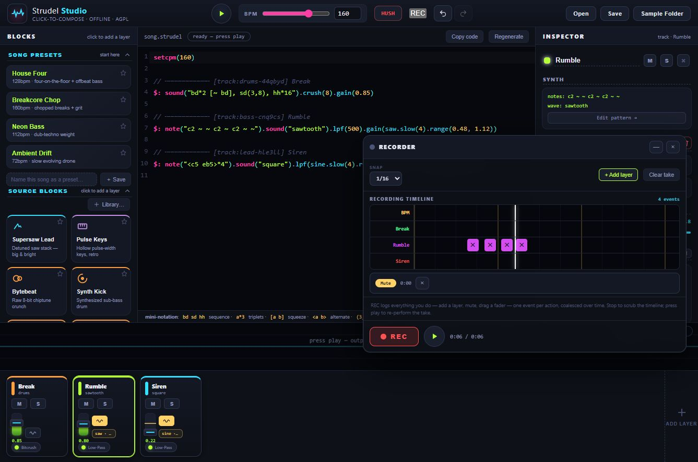
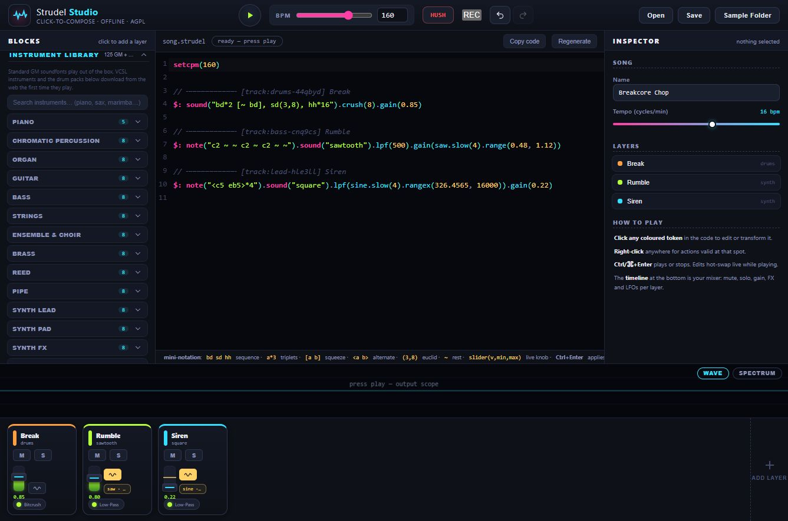
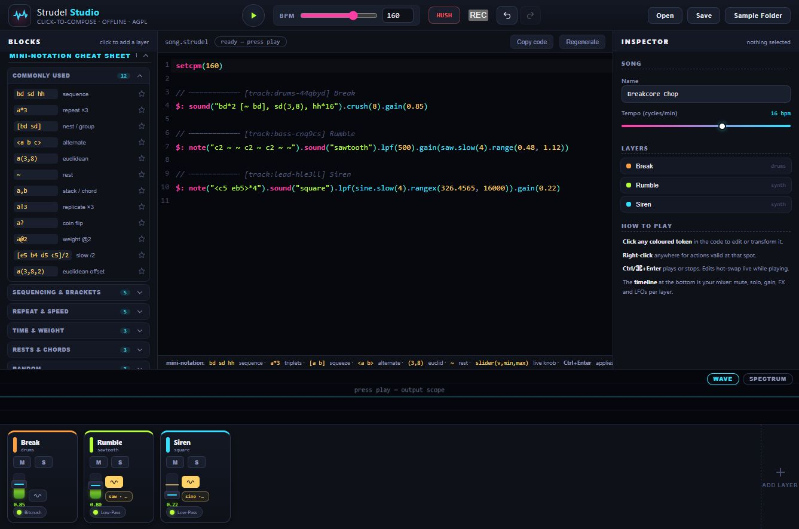

Free & open source · AGPL-3.0 · Windows
Live-code music without writing code
Strudel Studio wraps Strudel, the live-coding music language, in a DAW you drive with clicks. Blocks, faders, an LFO, a take recorder. Every knob writes real Strudel code you can read, copy, or hand to strudel.cc.

The Studio in four moves click, play, shape, record.

Click a block
Four-on-the-floor, an acid line, a filter pad; every block is a usable musical idea and adds a real layer to the timeline.
Press Play
The engine hot-swaps live while the music runs. Mute, solo, or drag a fader; the code writes itself as you perform.
Bend it with FX
Low-pass, crush, delay, plus LFOs that breathe your cutoff or your gain. 125 GM instruments one click away.
Hit REC
The recorder logs what you do: a mute at bar 8, a gain sweep, a layer at 0:37; then replays your session exactly.
The console for Strudel every control writes the code for you.
Code that writes itself, lighting up as it plays
The editor shows real, valid Strudel, regenerated on every click. Fired tokens glow inline so you can see which note is speaking.
The take recorder
Not audio capture: a session record. One event per thing you did, coalesced, scrubbed to any second. R arms it.

Instrument Library
125 General MIDI soundfonts and the VCSL orchestral world: Steinway, tenor sax, marimba. Search, star, click, the font streams on first play.

Mini-notation cheat sheet
Built from the Strudel docs: brackets, Euclid, randomness and pattern functions, grouped. Click a mini-notation row to add it; rows marked JS are reference only. Star any row to pin it, or add your own.

// $: note("c3 eb3 g3").sound("gm_piano")
Powered by Strudel
Everything here is for the Strudel community
Strudel Studio is a console for Strudel, the live-coding environment built by Felix Roos and the Strudel community. Wrapped, not rewritten. Released open, under the same AGPL-3.0, for the community.
The scheduler, the pattern language, the soundfonts and every synthesis decision are the real @strudel/* engine, embedded unmodified. Every contribution here (a preset, a block, a cheat sheet) is made to be used, studied and extended by the community that built the engine. This project exists because of Strudel, and it is for Strudel.
GO MAKE MUSIC · THE INSTRUMENT IS THEIRS
The Strudel Studio download three ways, one machine.
Windows app v0.1.2
v0.1.2 - real song presets and usable blocks, correct Strudel tempo, safe paste-import, inline sliders, native file dialogs. No build tools. Requires WebView2, preinstalled on Windows 11.
Download v0.1.2 for Windows → Zero installBrowser demo
The full app, right here. Press Play, click blocks, hit REC; everything works in the browser.
Open the demo →Build it yourself
Windows + Node 18+ + Rust 1.77+ MSVC.git clone → npm install → npm run tauri build
No telemetry or tracking. Built from public source; audit it, or build it yourself.
What ships next the Strudel Studio roadmap.
The FAQ answered straight.
Is it actually free?
Does it work offline?
Does it phone home?
What is Strudel, and why this wrapper?
note("c3 eb3 g3").sound("gm_piano") and music happens. It is also a wall of text for a first-time visitor. Renaldo wanted the music part. This is the result. See strudel.cc; learn the language, then come back when your hands are full of faders.Why is muting a comment in the code?
// in front of the $: line, and the GUI shows it exactly that way. Nothing is hidden from the code you see.Mac and Linux?
Something broke. Where do I report it?
Start playing Strudel your first groove in the next minute.
The demo runs in this tab. Press Play, click one block, hit REC. If you can use a mouse, you can play this.
$: note("c2 ~ eb2 ~ g2 ~").sound("square").lpf(750).gain(.65)
$: sound("bd*4, ~ hh*2").gain(.9)
$: note("<c3 eb3 g3>*2").sound("sawtooth").gain(.35)